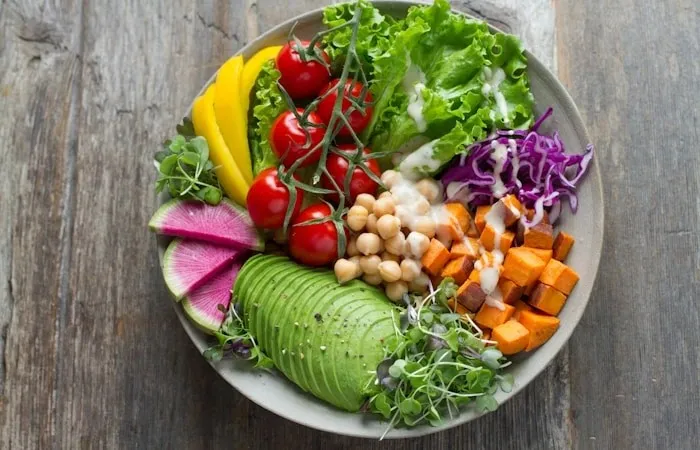
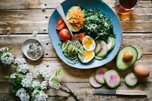
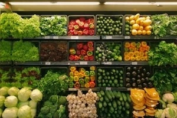
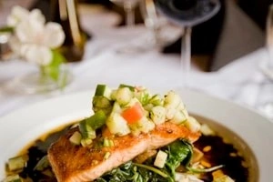
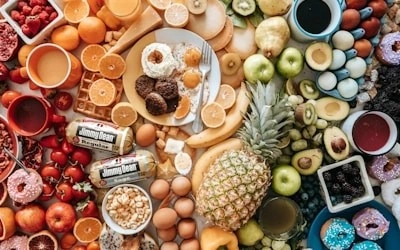
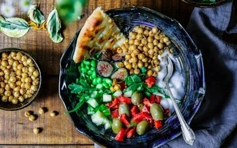

Featured · Jun 8, 2026
The Complete Guide To Eating Organic On A Budget
Smart shopping tips, meal planning hacks, and seasonal picks that won't break the bank.
Read Article
Smart shopping tips, meal planning hacks, and seasonal picks that won't break the bank.
Read ArticleTopics

Discover nutrient-dense picks beyond kale and blueberries.

Cut packaging waste without sacrificing convenience.

Everything you need for a clean, flavorful cookout.
Archive

Five dinners from one grocery run.
The science behind better-tasting produce.

Make healthy eating fun for little ones.
Articles
Recipes
Writers
Readers
Picks
Community
Newsletter
FAQ
New articles every Tuesday and Thursday.
Send pitches to blog@stackly.com — we welcome guest contributors.